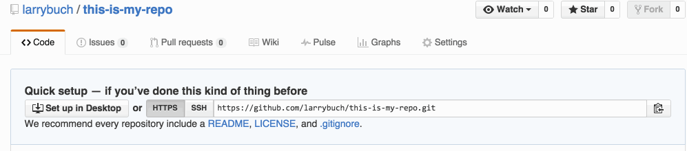
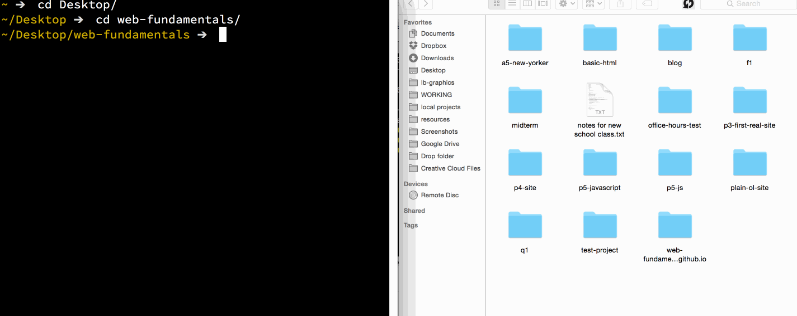

How To Create a Repo
- Go to GitHub.
- Click on New repository.
- Type in your repo name (all lowercase, no spaces) and hit Create repository. 
- In the next screen, copy the git link of your repo.
- Open iTerm.
- Navigate (cd) to your web-fundamentals folder 
- Type
git cloneand then paste in the url you copied. This will create a folder with that name. That's your repo. - cd into that repo and you're ready to roll!